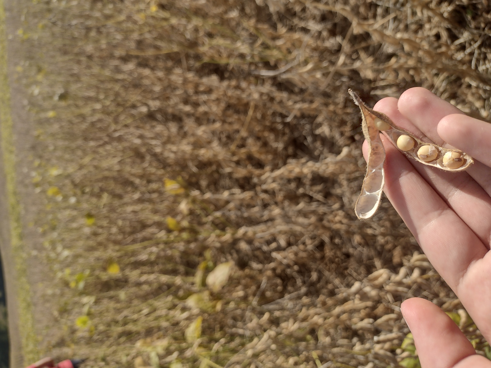

A interação entre o campo e a cidade, a cada ano vem se tornando mais importante!

Alimentos
Desde a Agricultura 1.0, a agricultura é muito importante para as sociedades, atualmente com a agricultura 2.0, a interação entre o campo-cidade se torna a cada passo mais impotante
Podemos ver isso de diversas formas como:
- A parceria de agricultores e empresas de tecnologia;
- Institutos de pesquisa que auxiliam os produtores rurais, como o IDR-PR;